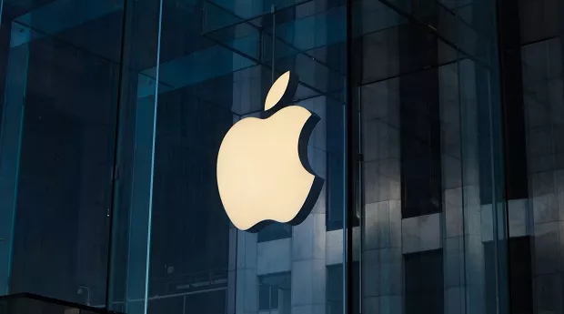

A demanda por profissionais especializados nessas áreas está em alta
A demanda por profissionais de tecnologia no Brasil é alta e tem crescido significativamente nos últimos anos, com estimativas de que o mercado precise de quase 800 mil novos profissionais até 2025. No entanto, a oferta de profissionais formados não acompanha essa demanda, resultando em um déficit considerável.
Ler mais

iPhone 17 Air: A aposta elegante da Apple que pode não destronar os Pro
A Apple parece estar a desenvolver um novo trunfo para a sua futura linha iPhone 17: o iPhone 17 Air. Contudo, segundo Mark Gurman, conceituado especialista da indústria, este modelo focado na elegância poderá não conseguir "bater recordes de vendas", com a maioria dos consumidores a continuar a preferir os modelos Pro.
Ler mais
Crescimento do uso da inteligência artifical em empresas
O crescimento da Inteligência Artificial (IA) nas empresas é uma tendência global e significativa, impulsionada pela crescente demanda por soluções de automação, otimização de processos e tomada de decisões baseadas em dados. Pesquisas indicam que mais de 70% das empresas já estão utilizando IA em seus negócios, com um aumento expressivo na adoção nos últimos anos.
Ler mais

Previsão para o mercado de realidade virtual quadriplicar em 4 tendo mais 100% de crescimento
A tecnologia de realidade virtual (VR), uma realidade simulada por computador que cria um ambiente artificial, é cada vez mais utilizada em setores como educação, jogos e aplicações de IA. Esta multimídia envolvente oferece um mundo virtual 3D, aprimorando experiências de aprendizagem e ambientes de jogo. A integração da IA enriquece ainda mais o ambiente virtual. O desenvolvimento do metaverso, um espaço coletivo compartilhado que combina VR, realidade aumentada, realidade mista e interface cérebro-computador, promete uma experiência interativa de realidade virtual. O mercado de VR, segmentado por hardware, usuário final e geografia, é dominado pelo setor de jogos, com a América do Norte liderando devido a inúmeras startups focadas em tecnologias de realidade geradas por computador.
Ler mais